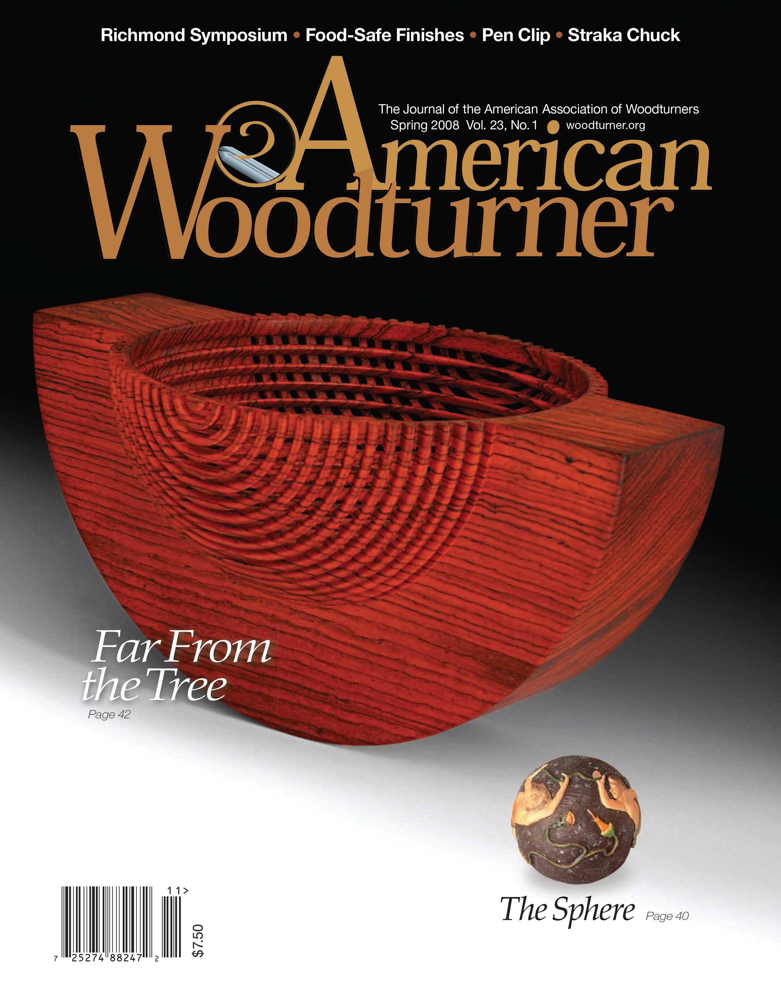
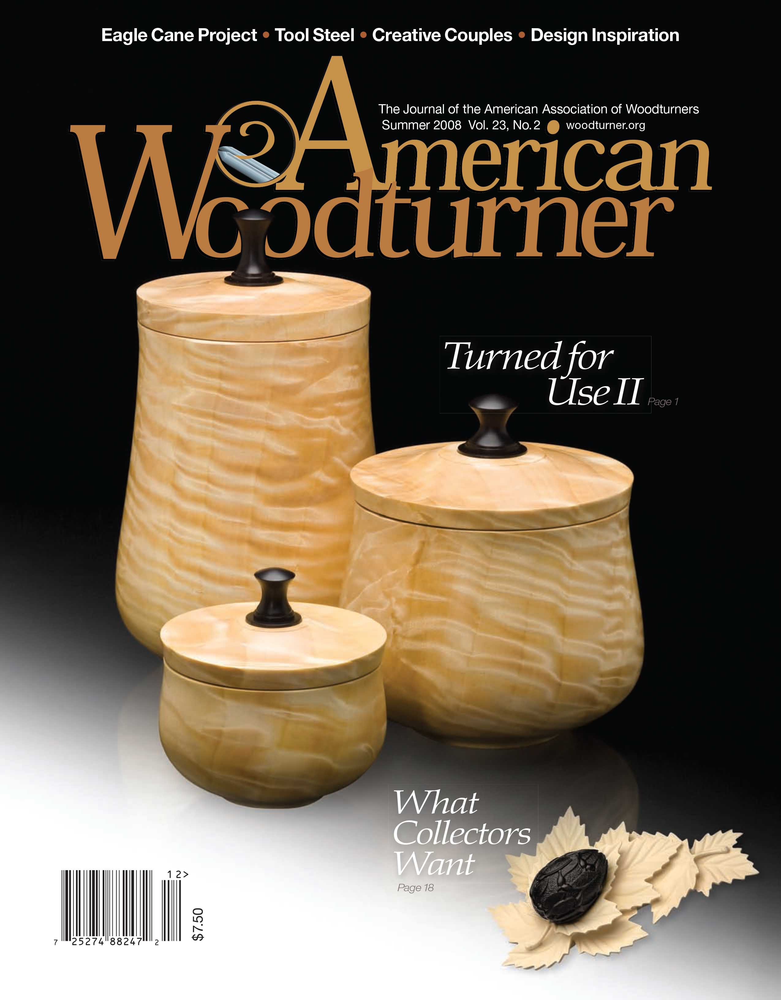
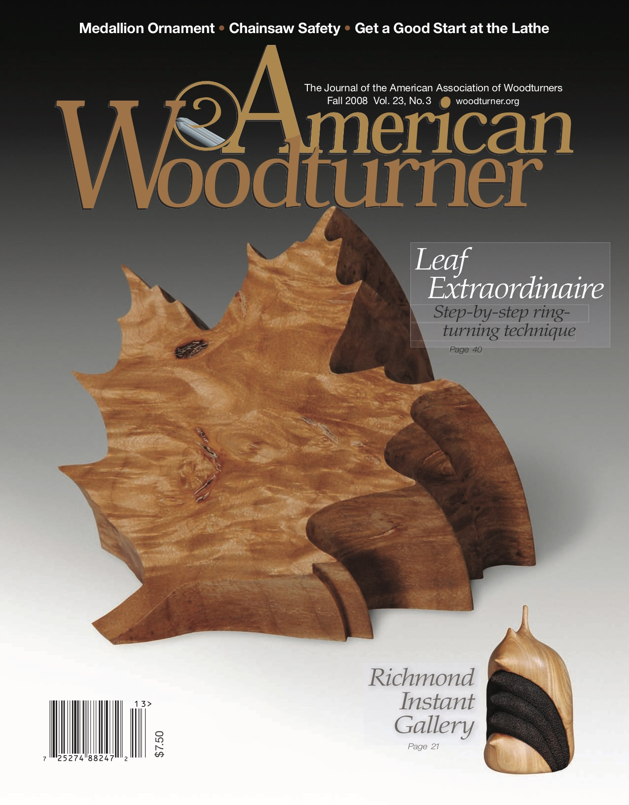
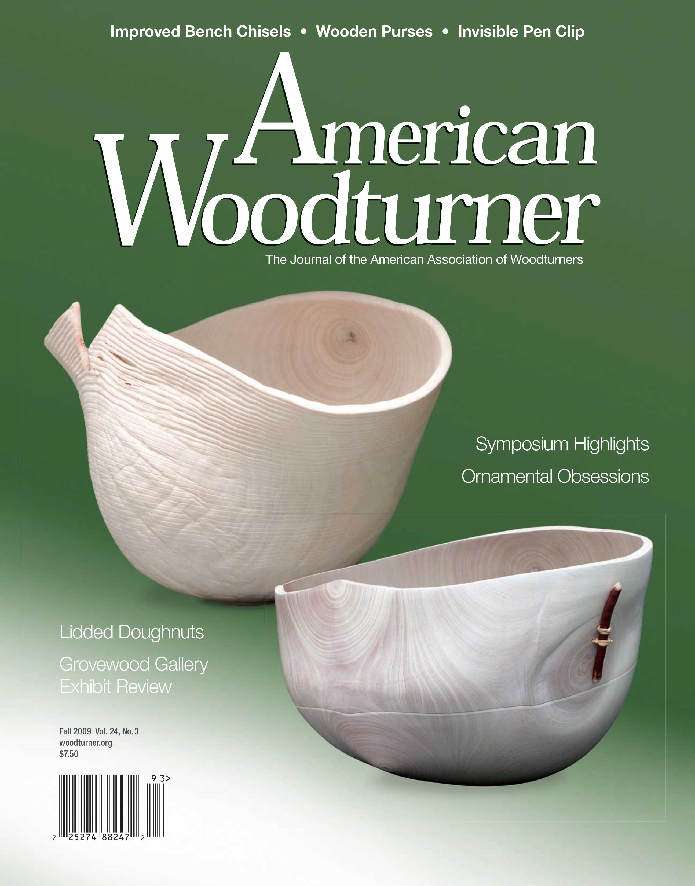
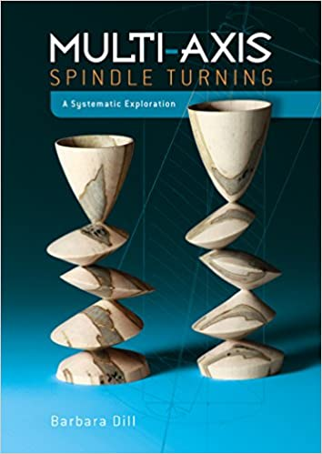
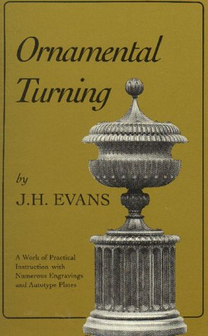
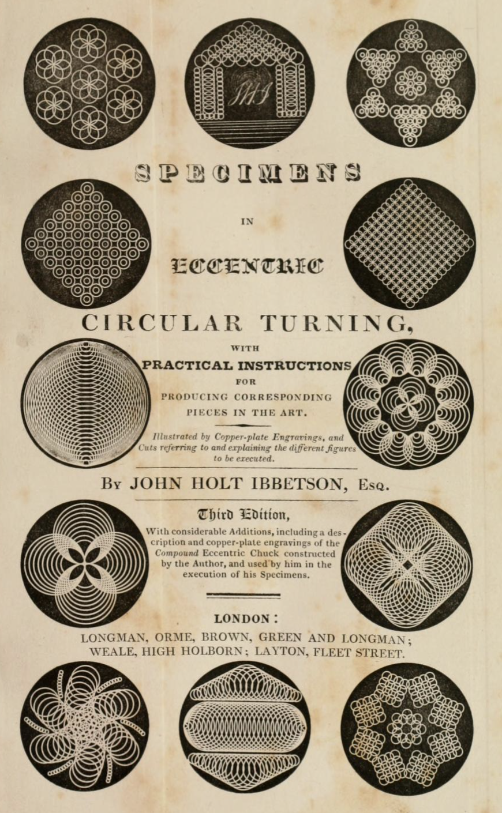
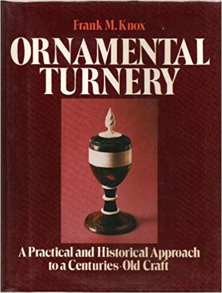
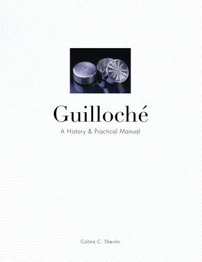

|
|

|
How to Get More Information |
| Magazine Articles | Books |
Magazine Articles about Ornamental Turning
Jon Magill wrote some really great articles for AAW's "American Woodturner".
He has all of the ones mentioned below on his site, www.RogueTurner.com, and links to them are provided. These are great reads for the person considering this hobby.
|
Rose-Engine Turning
It's a Small World
|

Spring 2008, Vol 23, #1
Build an Overhead Drive
The Cutting Edge of OT
|
|

Summer 2008, Vol 23, #2
Cutting Through the Layers
|

Fall 2008, Vol 23, #3
Phasing Fundamentals
|
|
Ornamental Snowflakes
|

Fall 2009, Vol 24, #3
Ornamental Obsessions - Slightly Eccentric
|
|
What is Old is New Again: A History of Contemporary Ornamental Turning
|
Books about Ornamental & Simple Turning
There are many historical choices for getting more information. Some of the books are a bit arcane, but they are none-the-less full of information.
Where possible, I've included links to electronic publications so you can get access to the information quicker (and cheaper). The paper version is probably better in the end as it is easier to mark up, make notes in, and reference quickly (plus, the having these books on your shelf makes you really look wise).
| Index of Authors | ||||||||||||||||||||||||||||||||||||||||||||||||||||||||||||||||||||||||||||||||||||||||||||||||||||||||||||||||||||||||||||||||||||||||||||||||||||||||||||||||||||||||||||||||||||||||||||||||||||||||||||||||||||||||||||||||||||||||||||||||||||||||||||||||||||||||||||||||||||||||||||||||||||||||||||||||||||||||||||||||||||||||||||||||||||||||||||||||||||||||||||||||||||||||||||||||||||||||||||||||||||||||||||||||||||||||||||||||||||||||||||||||||||||||||||||||||||||||||||||||||||||||||||||||||||||||||||||||||||||||||||||||||||||||||||||||||||||||||||||||||||||||||||||||||||||||||||||||||||||||||||||||||||||||||||||||||||||||||||||||||||||||||||||||||||||||||||||||||||||||||||||||||||||||||||||||||||||||||||||||||||||||||||||||||||||||||||||||||||||||||||||||||||||||||||||||||||||||||||||||||||||||||||||||||||||||||||||||||||||||||||||||||||||||||||||||||||||||||||||||||||||||||||||||||||||||||||||||||||||||||||||||||||||||||||||||||||||||||||||||||||||||||||||||||||||||||||||||||||||
|
||||||||||||||||||||||||||||||||||||||||||||||||||||||||||||||||||||||||||||||||||||||||||||||||||||||||||||||||||||||||||||||||||||||||||||||||||||||||||||||||||||||||||||||||||||||||||||||||||||||||||||||||||||||||||||||||||||||||||||||||||||||||||||||||||||||||||||||||||||||||||||||||||||||||||||||||||||||||||||||||||||||||||||||||||||||||||||||||||||||||||||||||||||||||||||||||||||||||||||||||||||||||||||||||||||||||||||||||||||||||||||||||||||||||||||||||||||||||||||||||||||||||||||||||||||||||||||||||||||||||||||||||||||||||||||||||||||||||||||||||||||||||||||||||||||||||||||||||||||||||||||||||||||||||||||||||||||||||||||||||||||||||||||||||||||||||||||||||||||||||||||||||||||||||||||||||||||||||||||||||||||||||||||||||||||||||||||||||||||||||||||||||||||||||||||||||||||||||||||||||||||||||||||||||||||||||||||||||||||||||||||||||||||||||||||||||||||||||||||||||||||||||||||||||||||||||||||||||||||||||||||||||||||||||||||||||||||||||||||||||||||||||||||||||||||||||||||||||||||||
There are other books that are referenced by some; however I have only included those which are either available for purchase, or available as an eBook.
These are arranged by the original author's family name.
Bazley, Thomas Sebastian
ISBN-13: 9781375550727
Bergeron, Louis-Eloy, 1792
ISBN-13: 9782851011725 / 9780274953899
The first edition was published in French as two volumes.
Hamelin-Bergeron, Pierre, 1816
ISBN-13: 9780341250623
The second edition was also published in French as two volumes, but this one has all the drawings and diagrams in a 3rd volume (the "plates" book). This is a very useful approach as the text about the drawings can be read without having to flip back and forth between pages.
A different person, Pierre Hamelin-Bergeron (an actual relative of Louis-Eloy Bergeron), is shown as the author.
Aird, David Alfred, 1877
David translated this book to English, and published it as a complete book in one volume. It was scanned by Google Books at the Bodleian Library, but the quality is poor and not very legible.
This is a very recent translation into English of the Hamelin-Bergeron edition (volume II & the plates). It is a masterful work made available to us by a member of the The Society of Ornamental Turners, and should be available from this group (if they have any copies remaining). I can say that the cost of this set is significantly below the value provided.
This set of books (you need both) is amazingly useful in understanding the techniques used by turners 200+ years ago. There are so many topics addressed that I highly recommend this be in each turner's library. Among others, Springett's book, Woodturning Wizardry, is greatly enhanced by having access to the information in this book.
As with the 1816 version, having the diagrams in a separate book from the text is a very useful approach. The text about the drawings can be read without having to flip back and forth between pages.
Both names, "Louis-Eloy Bergeron" and "Pierre Hamelin-Bergeron" are considered to be pseudonyms for Louis-Georges-Isaac Salivet, an eminent lawyer who is believed to be the actual author of both editions. Regardless, it is generally referred to as "the Bergeron book".
This book was one of the first books on turning, and like Plumier, is still referenced by many.
Chaplin, Charles Henry
Dill, Barbara
ISBN-10: 0764355341
ISBN-13: 978-0764355349
Barbara Dill is an artist and woodturner who makes many great pieces using multi-axis turning. Whilst she does not use an ornamental lathe, her works can be great inspiration for the ornamental turner.
Additionally, the techniques she teaches for visualizing the action are quite good.
Evans, John Henry (usually listed as J.H. Evans)
ISBN-10: 1879335352
Published in London by Percival Marshall & Co. This is a general technical introduction to the field of ornamental turning. Percival Marshall was the founder and publisher of the magazine "The Model Engineer".
Gascoigne, Mary Isabella Oliver
ISBN-10: 1016711905
ISBN-13: 978-1016711906
The work was originally published as the "Handbook of Turning" in London in 1842. The author was Mary Isabella Oliver Gascoigne (1810-1891) of Parlington Hall, Yorkshire.
While revealing her gender by writing anonymously and by referring to herself in the masculine in the preface, she encourages women to pursue the craft. "Why should not our fair countrywomen participate in this amusement? . . . What occupation can be more interesting and elegant than ornamenting wood or ivory in delicate and intricate patterns, and imitating, with the aid of the lathe, the beautiful Chinese carving, so much and so justly admired? Besides, the taper fingers of the fair sex are far better suited than a man's heavier hand, to produce the requisite lightness and clearness of effect."
Holtzapffel, Charles
Holtzapffel, Charles
Holtzapffel, Charles
This was originally published in 1850 by Charles Holtzapffel, and was later updated by Charles' son, John Jacob Holtzapffel in 1894.
The 2d edition has 796 pages, of which 300 were revised from the first edition by John Jacob. Holtzapffel, John Jacob
This book is especially worth having if you want to try making items like spheres, Chinese balls, and Singapore balls. Among others, Springett's book, Woodturning Wizardry, is greatly enhanced by having access to the information in this book (along with Soulsby's translation of Manuel du Tourneur).
There are many useful topics addressed in this book, and I highly recommend this be in each turner's library.
Holtzapffel, John Jacob
This is considered by many to be the manual for ornamental turning. It is a highly detailed instruction manual covering all aspects of ornamental turning apparatuses.
The language can be a bit hard to follow for someone new to the craft. Probably best to start with a book like Knox's Ornamental Turnery or Walshaw's Ornamental Turning.
Holtzapffel originally planned to publish his tome in 6 volumes (see also, picture to the right from the front pages of Hotzapffel's books). For reasons I don't know, only 5 were published.
Fortunately, John Edwards has compiled an huge amount of this information and has published it as "Hotzapffel, Volume VI".
You can order it (ISBN 978-0-9576594-0-7) from John Edward's sites, OrnamentalTurning.co.uk or OrnamentalTurning.info.
Ibbetson, John Holt, Esq.
Jones, Bill
Bill was a production turner who made some fabulous items. This book is a wonderful read from a practitioner, not an equipment manufacturer.
Jones, Bill
This is the 2d book from Bill Jones, and it is also a very worthwhile addition to your library. And, unlike other authors' books, this is not simply a re-write of their first work; it is a whole new set of information with very little overlap.
Knox, Frank M.
If you are just starting, this is the first book to read. I purchased a used (but very good quality) copy for $16.50.
Lethiecq, Claude
Claude unfortunately passed away in the 2010s, but his body of work remains an awe to all. He really took David Springett's Woodturning Wizardry to a whole new level. And in the introduction to this opus, Claude notes:
Had I not read David Springett's book "Woodturning Wizardry" back in 1993, this book would never have been written. So it is only fair that it is my turn to dedicate this book to him.
But even as I write this I am still not sure if I should be angry or grateful to him for having started this whole adventure.
What is wonderful is that he documented his work and the techniques he used, and it is freely available at this web site. I snagged a copy of the complete document for this site just to be sure it is not lost.
This YouTube video shows Claude talking about the Chinese nested spheres he makes. It was recorded at the 2010 AAW symposium.
Lukin, James
ISBN-10: 1879335492
Lukin, James
Lynn, Bob
Bob established the Lynn Woodwork Museum in New Zealand.
Matthews, Martin
You can order a newly reprinted copy from The Society of Ornamental Turners.
Phin, John, Ph.D.
Plumier, Charles
Wulff, Enrique
Wulff translated the 2d Edition to English.
There are very few earlier books about turning. David M. MacMillan and Rollande Krandall have great web site, Circuitous Root which outlines some of these; however, this book is one of the earliest known books on ornamental turning, and like Bergeron, it is still referenced by many.
Shevlin, Calina C.
This is an excellent book that tracks the birth, decline, and revival of this endangered craft and features exclusive information from the world's few living professional guillochéurs, as well as an exploration of the distinction between guilloché and its forebearer, ornamental turning.
Calina finished her MFA in the USA, then moved to Switzerland to work in the watch industry making watch faces.
This book shows some really beautiful pictures of the machines and the works produced on them, and is a great coffee table book if nothing else.
Springett, David
This is an excellent book that outlines how to make spheres within spheres, stars within cubes, and other amazing items.
"... woodturners over the centuries have developed a whole range of extraordinary structures which seem at first sight to be quite impossible. In fact, all of these things can be made by anyone with basic woodturning skills, an ordinary lathe and simple hand tools - and this book shows you how."
This is all stuff you can make on a "traditional" lathe, but works well when combined with items made on the rose engine lathe.
Note: Holtzapffel's Turning and Mechanical Manipulation, vol. 4 is a good resource for helping with these endeavours. Springett's book is good as it gives more succinct instructions and great pictures (in the 2d edition).
David also made this video in 2008 about elliptical turning on a lathe, explaining it better than many have since.
Walshaw,
T.D.
ISBN-13: 9781854861085
The art of ornamental turning in wood (and, in former days, ivory) has a long and distinguished history and it has recently experienced a renaissance among craftspeople. This is T.D. Walshaw's guide to the art, aimed not only at the experienced woodturner, but also at the novice. This book provides comprehensive chapters on purpose-built ornamental lathes (both antique and modern), essential accessories, using cutting and decorative tools, plus detailed information about screw threads and templates. There are also clear directions on using a standard engineer's lathe to create ornamental work. Fully illustrated with close-up photographs of work in stages and finished projects, plus detailed plans and diagrams, this is the instruction book for any woodturner wanting to master the art of ornamental turning.
Tom Walshaw is better known to hobbyists under the pen name "Tubal Cain" - the writer of many best-selling home workshop and model engineering guides, though he is not the same "Tubal Cain" who has many videos on YouTube (AKA, MrPete222). Additionally, I strongly believe neither is the Tubal-cain mentioned in Genesis 4:22.
If you are just starting, this is the second book to read. I purchased a used (but very good quality) copy for $14.00.
Index to the Geometric Chuck: A Treatise Upon the Description, in the Lathe, of Simple and Compound Epitrochoidal or "Geometric" Curves, 1875
eBook:
- Internet Archive
731 pages
ISBN-10: 1375550721

Manuel du Tourneur
ISBN-10: 2851011723 / 0274953897
ISBN-10: 0341250627
eBook:
- The Turner's Manual
Soulsby, Jeremy, 2010

Ornamental Lathework for Amateurs, circa 1914
eBook:
- Internet Archive
121 pages

Multi-Axis Spindle Turning: A Systematic Exploration, 2018
128 pages

Ornamental Turning - A Work of Practical Instruction in the Above Art, 1903

The Turner's Companion Containing Instructions in Concentric, Elliptic, and Eccentric Turning; also Various Plates of Chucks, Tools, and Instruments; and Directions for Using the Eccentric Cutter, Drill, Vertical Cutter, and Circular Rest; with Patterns, and Instructions for Working Them, 1851
135 pages
Turning and Mechanical Manipulation, Vol. 1 - Materials, Their Choice, Preparation and Various Modes of Working Them, 1843
eBook:
- Internet Archive
480 pages
Turning and Mechanical Manipulation, Vol. 2 - Construction, Action, and Application of Cutting Tools, 1846
eBook:
- Internet Archive
568 pages
Turning and Mechanical Manipulation, Vol. 3 - Abrasive and Other Processes not Accomplished with Cutting Tools, 1850
eBook:
- Internet Archive
796 pages
Turning and Mechanical Manipulation, Vol. 4 - Hand Or Simple Turning: Principles and Practice, 1881
eBook:
- Internet Archive
592 pages
Turning and Mechanical Manipulation, vol. 5 - The Principles and Practice of Ornamental or Complex Turning, 1884
eBook:
- Internet Archive
656 pages
Holtzapffel, vol. 6 - A Compendium of Rare or Previously Unpublished Material Related to Ornamental Turning, 2013


Specimens in Eccentric Circular Turning with Practical Instructions for Producing Corresponding Pieces in the Art, 1838
eBook:
- Internet Archive
142 pages.
Notes from the Turning Shop, 1996
142 pages.
Further Notes from the Turning Shop, 1997
142 pages.

Ornamental Turnery - A Practical and Historical Approach to a Centuries-Old Craft, 1986
78 pages.
START HERE
Tour de Force Wood Turning, 2013
320 pages
eBook:
- Copy from web site
The Lathe & Its Uses: or Instruction in the Art of Turning Wood and Metal, 1868
eBook:
- Internet Archive
303 pages
Simple Decorative Lathe Work: A Practical Handbook on the Construction and Use of the Ordinary Turning Lathe, for the Purpose of the Above Art, 1905
eBook:
- Internet Archive
88 pages
Woodwork - My First Seventy Years - With a Comprehensive Section on Ornamental Turning, 1992
1,200 pages
Engine Turning 1680-1980, The Tools and Technique, 1982
eBook:
Industrial Recipes, 1913
- Internet Archive
172 pages

L'Art de Tourneur en Perfection, 1701 & 1749
eBooks: (courtesy, ArsMathematica.org)
- 1st Edition, 1701 (in French)
- 2d Edition, 1749 (in French)

Guilloché: A History & Practical Manual, 2017
Woodturning Wizardry, 2005
191 pages
Ornamental Turning, 1990
208 pages.
ISBN-10: 1854861085